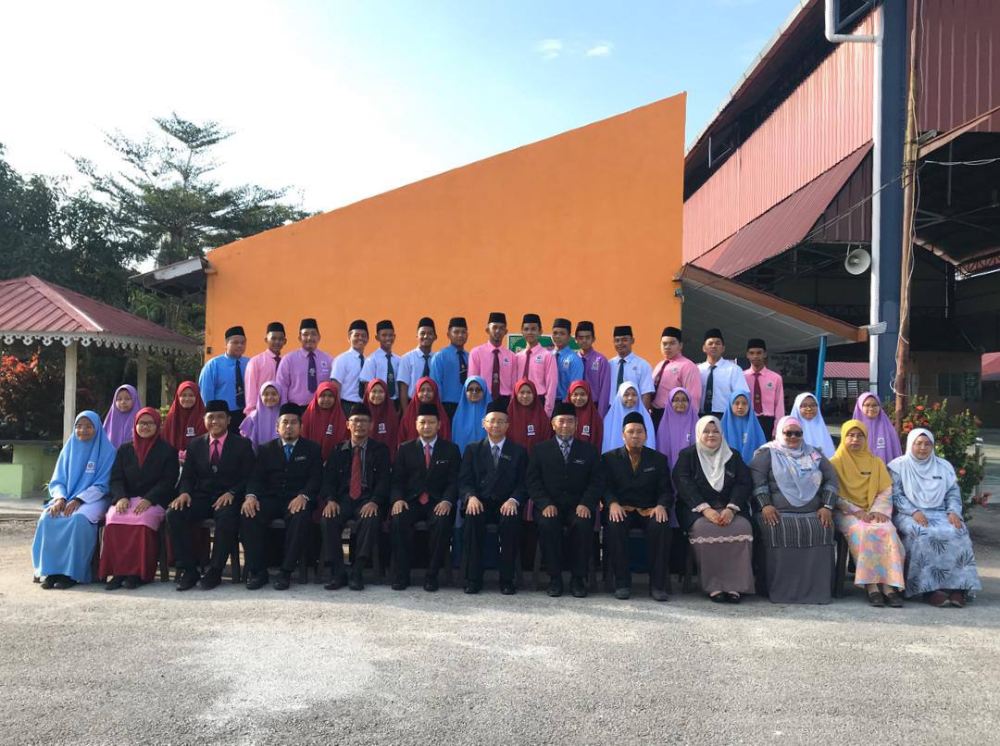

| NO. | EDUCATION | YEAR |
|---|---|---|
| 1. | Sekolah Kebangsaan Puncak Alam 3. | 2011-2016 |
| 2. | Sekolah Agama Rendah Kafa Integrasi Ibnu Sina Puncak Alam. | 2011-2016 |
| 3. | Sekolah Menengah Agama Al-Ulum Al-Syariyyah | 2017-2021 |
| 4. | Universiti Teknologi Mara Cawangan Johor, Segamat. | 2022-2025 |
Positions I have held
School Prefect (2012-2016)
Peer Mentor (2019-2021)

Dormitory committee member (2020-2021)